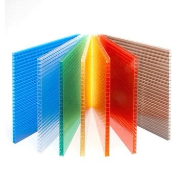
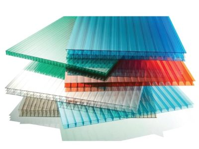
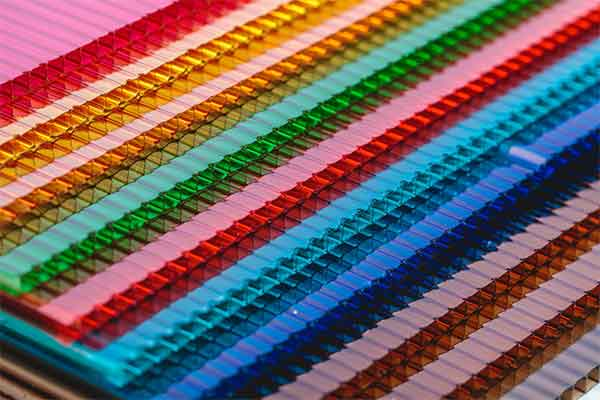
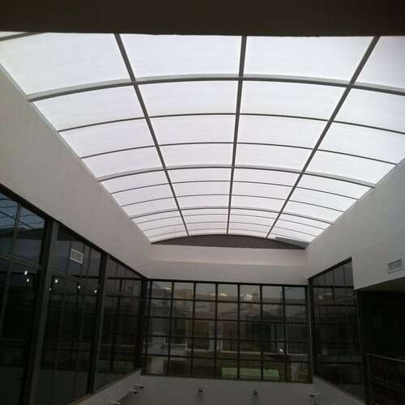
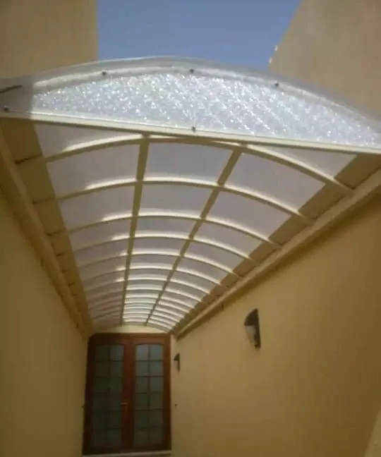
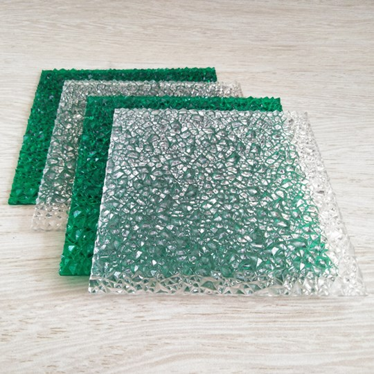
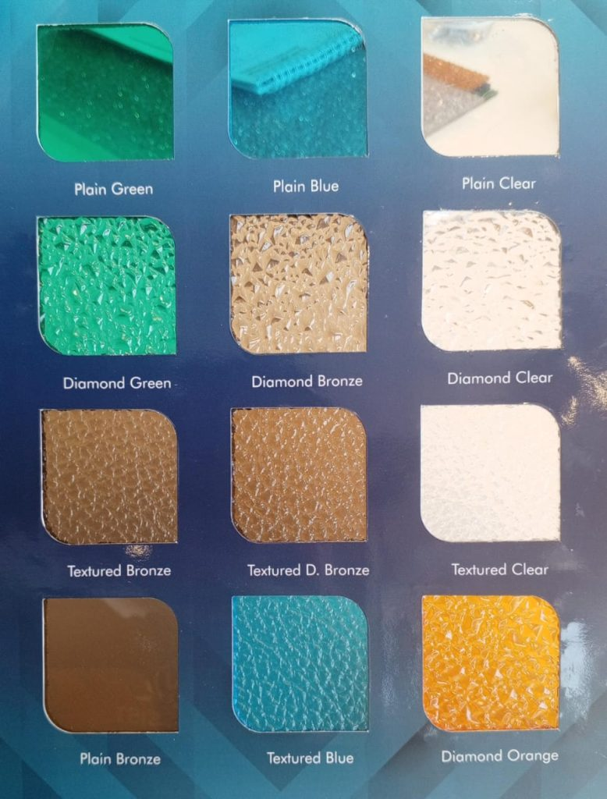

صور لكسان
2026 | مقالات و صور لكسان متنوعة
مقالات عن انواع اللكسان واسعارها
ا
الواجب لكتاب
لكسان انواعها اسعارها بالصور LEXAN الواح بلاستيكية مقاومة للأشعة فوق البنفسجية مظلات لكسان هي بديل متفوق للزجاج التقليدي أو البلاستيك الآخر. تشتهر هذه الالواح بمتانتها على المدى الطويل ، حيث تتميز بمقاومة لا مثيل لها للأشعة فوق البنفسجية على أحد الجانبين أو كليهما ومقاومة ملحوظة للإصفرار وتدهور الأداء بسبب التعرض الطويل للطقس. مع وضوح لا مثيل له حتى بعد سنوات من أشعة الشمس الشديدة والظروف الجوية القاسية ، تؤكد هذه المواد المصنوعة من البولي كربونات غير القابلة للكسر والشفافة على أوراق LEXAN كخيار رائد في الصناعة. تخدم محفظة LEXAN مجموعة متنوعة من الصناعات ، مما يعزز سمعتها كبديل أساسي ومتعدد الاستخدامات للمواد التقليدية.
الليكسان عبارة عن لدن بالحرارة مصنوع من راتينج البولي كربونات. باختصار، ما يعنيه ذلك هو أنها مادة صلبة يمكن أن تتشوه في الحرارة الشديدة (عادة 147 درجة مئوية، أو 297 درجة فهرنهايت) وتتكون جزيئاتها من وحدات فرعية متكررة.
الفوائد الرئيسية لمادة اللكسان
مقاومة عالية للحرارة واللهب
مقاومة ممتازة للحرارة العالية واللهب
قوة عالية
متانة وقوة تحمل عالية
خفيف الوزن
وزن خفيف وسهل التحميل والتركيب
قابلية التكوين
سهل التشكيل والتركيب
مرن
مرونة عالية في الاستخدام
مقاومة للمواد الكيميائية
مقاومة عالية للمواد الكيميائية والدهانات
مجموعة الألوان المتوفرة
تتوفر ألواح اللكسان بمجموعة واسعة من الألوان لتتناسب مع جميع الأذواق والتصاميم
ألواح البولي كربونات
عبارة عن ألواح بولي كلوريد الفينيل هياكل متعددة الأكثر تقدمًا في الصناعة. ولا يزال هناك العديد من العشاق على مستوى عالٍ من الكثافة والكثافة العالية، والضوء العالي على المدى الطويل. ولن تنكسر هذه الأحداث المتعددة للتأثيرات العالية التأثير بسبب قوة التأثير ، وتحافظ على الوضوح الشامل.
التطبيقات المتعددة
يسمح تنوعها بالعديد من التطبيقات بما في ذلك التسقيف ، وتكسية الجدران ، والزجاج والتقسيم مما يجعلها مثالية للممرات المغطاة ، والحدائق ، ومراكز التسوق ، والمجمعات الرياضية ، مظلات المسابح.
فوائد صفائح البولي كربونات متعددة الجدران LEXAN
مقاومة للطقس
مقاومة للتقلبات المناخية (الثلج، الحرارة، البرد، الرياح القوية)
خفيف الوزن
وزن خفيف وسهل التحميل والتركيب
قوي ودائم
متانة عالية ومقاومة للصدمات
شفافية كبيرة
نسبة انتقال ضوء تصل إلى 82%
غير قابلة للكسر عملياً
مقاومة عالية للكسر والتشقق
مقاومة للتكثف
يقلل من تكوين القطرات، مما يسمح للمياه بالانزلاق بشكل أفضل
سهلة التركيب
يمكن حفرها دون التعرض لخطر التشقق أو الكسر
قابلية التشكيل
مرونة عالية في التشكيل والتصميم
وضوح بصري
وضوح بصري يشبه الزجاج
لماذا تختار البولي كربونات المموجة ليكسان لمشاريعك؟
في شركة القاسم المتطورة نعطي الأولوية للجودة ورضا العملاء. باختيار ورقة البولي كربونات Lexan ، فأنت تستثمر في منتج شكلته سنوات من الخبرة في الصناعة والتزام لا هوادة فيه بالتميز. تفانينا في تقديم حلول عالية الجودة وموثوقة يميزنا.
جودة عالية
أعلى معايير الجودة في الصناعة
رضا العملاء
أولوية قصوى لرضا وتطلعات العملاء
خبرة طويلة
سنوات من الخبرة والتطوير المستمر
موثوقية
حلول موثوقة تتحمل اختبار الزمن
سقف اللكسان
يسمح تنوعها بالعديد من التطبيقات بما في ذلك التسقيف ، وتكسية الجدران ، والزجاج والتقسيم مما يجعلها مثالية للممرات المغطاة ، والحدائق ، ومراكز التسوق ، والمجمعات الرياضية ، مظلات المسابح.
مراكز التسوق
الحدائق
المسابح
المجمعات الرياضية
الممرات المغطاة
أسعار اللكسان
متاحة للألواح باللون الشفاف المفرغ وفق المقاسات والأسعار التالية:
الألوان المتوفرة
كما يتوفر لدينا اللوح باللون الأزرق الشفاف والأخضر والبرونزي والأسود والأبيض بالمقاسات والأسعار التالية:
سماكة 6 مم
6 متر × 2.10 متر
600 ريال للوح
سماكة 10 مم
6 متر × 2.10 متر
850 ريال للوح
ملاحظة: الأسعار قابلة للتغيير حسب الكمية والموسم. للاستفسار عن أحدث العروض يرجى الاتصال بنا.
أنواع اللكسان
الأكريليك مقابل البولي كربونات: ما الفرق؟
الأكريليك والبولي كربونات هما من المواد البلاستيكية الأكثر شعبية عبر صناعات متعددة. تقدم كلتا المادتين مجموعة من الفوائد والعمل في العديد من التطبيقات المختلفة، من حماية مشغل السيارة إلى حالات عرض البيع بالتجزئة. يتم الترحيب بكلتا المادتين لرؤيتهما الشبيهة بالزجاج، وخصائصهما المقاومة للحطم، مما يجعل كلاهما استثمارات سلامة شائعة. كما أنها خفيفة الوزن ومتينة، وتوفر حلولًا اقتصادية وعملية في العديد من الصناعات.
ما هو الأكريليك؟
أكريليك، يُعرف أيضًا باسم PMMA (أو ميثاكريلات البولي ميثيل)، هو بلاستيك غير متبلور يتميز بشفافية وعدم سمية وقوة. تستخدم هذه المادة خفيفة الوزن بشكل شائع كبديل مقاوم للكسر للزجاج، مما يوفر ما يصل إلى 20 ضعف مقاومة التأثير عند نصف الوزن. كما يتميز بمقاومة عالية للأشعة فوق البنفسجية، مما يجعله مفيدًا بشكل لا يصدق في التطبيقات الخارجية.
البوليمرات هي مورد بلاستيك رائد للأكريليك في جميع مدن المملكة.
أكريليك: إيجابيات وسلبيات
إيجابيات
- أكثر شفافية: يتميز الأكريليك بمظهر لامع وواضح بصريًا مقارنة بالبولي كربونات.
- مقاومة الخدش: عادة ما يكون الأكريليك أكثر مقاومة للخدش من البولي كربونات.
- مقاومة للأشعة فوق البنفسجية بشكل داخلي: لن يتدهور الأكريليك بسبب التعرض للأشعة فوق البنفسجية.
- خيارات اللون والتلميع: تتوفر العديد من الدرجات المختلفة.
- صفات لاصقة: يلتصق الغراء والمواد اللاصقة الأخرى بشكل أفضل بالأكريليك.
سلبيات
- أقل مقاومة للصدمات من البولي كربونات.
- أكثر عرضة للتشقق عند التركيب.
- أقل مرونة في التشكيل البارد.
- أكثر حساسية للمذيبات الكيميائية القوية.
ما هو البولي كربونات؟
بلاستيك بولي كربونات، غالبًا ما يتم وصفه بأنه ليكسان™، هو بلاستيك حراري غير متبلور المعروف بأنه غير قابل للكسر عمليًا. تقدم البولي كربونات صفات بصرية مشابهة جدًا للزجاج، ولكن أقوى 250 مرة وأخف بكثير. إلى جانب قوتها المذهلة، تتمتع صفائح البولي كربونات بنطاق درجة حرارة تشغيل واسع جدًا، مما يوفر أداءً مستقرًا يصل إلى 265°F (130°C).
البوليمرات هي الموزع الرائد للبلاستيك صفائح البولي كربونات LEXAN™.
البولي كربونات: إيجابيات وسلبيات
إيجابيات
- غير قابل للكسر تقريبًا: أكثر مقاومة للصدمات 250x من الزجاج.
- الانحناء البارد: يمكن ثني هذه المادة دون كسر أو تشقق.
- المقاومة الكيميائية: مقاوم للأحماض والمواد الكيميائية.
- المزيد من خيارات التنظيف: يمكن تنظيفه بعوامل تنظيف أقسى.
- قابلية للاشتعال: القابلية للاشتعال المنخفضة تعني تحسين السلامة.
سلبيات
- أسهل من الخدش من الأكريليك: من الصعب إزالة الخدوش.
- مقاومة أقل للأشعة فوق البنفسجية: قد يتغير لونه بمرور الوقت.
- وضوح أقل قليلاً: أقل شفافية بقليل من الأكريليك.
- تكلفة أعلى نسبيًا من الأكريليك.
خدمات الصيانة
كما نقوم بصيانة مظلات اللكسان باحترافية عالية وباستخدام أفضل المواد والتقنيات.
عروض وأسعار اللكسان
أفضل العروض على مظلات اللكسان الشفافة
ستتمكن معنا من الحصول على أفضل عروض مظلات لكسان الشفافة التي نقدمها باستمرار من خلال شركتنا، وتختلف الأسعار والعروض وفقًا للمساحة والنوع والسماكة، لكن تأكد أنك ستجد أفضل أسعار مظلات لكسان الشفافة في المملكة، ونسعد باستقبال اتصالاتك عبر الأرقام المتاحة في الموقع، ونحن دائمًا في خدمتك.
خصومات الكميات
خصومات خاصة على الطلبات الكبيرة والمشاريع التجارية
تركيب مجاني
خدمة تركيب مجانية على بعض العروض المحددة
ضمان ممتد
فترة ضمان ممتدة على جميع منتجاتنا
دعم فني
دعم فني مجاني واستشارات هندسية